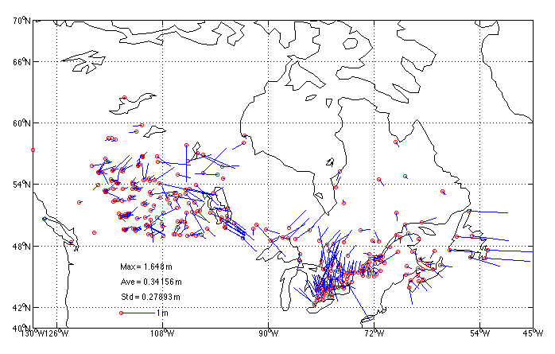
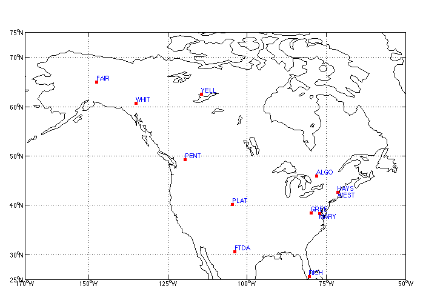

M. CRAYMER1, R. FERLAND2, R. SNAY3
1Geodetic Survey Division, Natural Resources Canada,
615 Booth Street, Ottawa, Ontario K1A 0E9, Canada.>
Tel. 613-947-1829, Fax. 613-992-6628, Email:
craymer@nrcan.gc.ca
2Geodetic Survey Division, Natural Resources Canada,
615 Booth Street, Ottawa, Ontario K1A 0E9, Canada.
Tel. 613-995-4002, Fax. 613-995-3215, Email:
rferland@nrcan.gc.ca
3National Geodetic Survey, N/NGS5, National Oceanic and
Atmospheric Administration, 1315 East-West Highway, Silver Spring,
Maryland 202910-3282, U.S.A.
Tel. 301-713-3205x155, Fax. 301-713-4327, Email:
rich@ngs.noaa.gov
Proceedings of the International Symposium of the International Association of Geodesy, Section II,
"Towards an Integrated Geodetic Observing System (IGGOS)", Munich, October 5-9, 1998, pp. 118-121.
Revised 11 March 1999.
A more unified realization of the North American Datum of 1983 (NAD83) was recently implemented by Canada and the U.S. to provide more accurate and convenient access to this reference system. In both countries, NAD83 is the adopted datum for spatial positioning. It was initially realized in the mid-1980s by adjusting primarily classical geodetic observations that connected a network of monumented control points spanning North America. Although the new NAD83 realization is compatible with the original one within the accuracies of those classical observations, the wide use of high precision GPS surveys since then have required a more rigorous definition of NAD83 in terms of network scale, ellipsoidal heights and crustal motion. In an effort to provide a more precise realization of a 3D NAD83 common to both countries, and to comply with IAG resolutions recommending that reference systems be tied to the ITRS, Canada and the U.S. have collaborated in the determination of a common transformation between the ITRF and the fundamental 3D datum of NAD83. This conformal similarity transformation is based upon ITRF96, the latest realization of ITRF. Through the use of continuously operating GPS stations (CACS in Canada and CORS in the U.S.) forming part of the ITRF, this transformation also provides more accurate and convenient access to the NAD83 reference frame. It also allows for the conversion of IGS precise GPS ephemerides from ITRF to NAD83, thereby enabling high accuracy GPS surveys to be performed entirely within NAD83.
The adopted datum or reference system for spatial positioning in Canada and the United States (U.S.) is the North American Datum of 1983 (NAD83). The original 1986 realization of this datum was defined to be compatible with the BIH Terrestrial System BTS84, which was the best available global reference frame at the time. The origin of BTS84 was defined largely by satellite laser ranging (SLR), while its orientation was defined by astronomic observations and its scale by both SLR and very long baseline interferometry (VLBI).
NAD83, on the other hand, was realized mainly through Doppler observations using internationally accepted transformations from the Doppler reference frame to BTS84. VLBI stations were also included to provide an accurate connection to other reference frames. Although NAD83 is defined by a three dimensional reference frame, access to it by end users for general spatial positioning needs was provided through a dense network of horizontal control monuments. This network was established mainly by conventional horizontal control methods, such as triangulation, trilateration and astronomic azimuths, with some GPS baselines used in later years. The adjustment of these horizontal observations, together with several hundred observed Doppler positions, provided a practical realization of NAD83 fixed to the North American tectonic plate.
At the time of its initial realization, NAD83 was intended to be a geocentric system and was compatible with the other geocentric systems of the time, such as the original realization of WGS84. However, due to the use of more accurate techniques, it is now known that NAD83 is offset by about 2 m from the true geocenter. The best geocentric reference frame currently available is the International Terrestrial Reference Frame (ITRF).
Another limitation of the original realization of NAD83 was that access to it was provided mainly through a horizontal control network. Today, many applications of GPS require convenient access to the more fundamental 3D definition of the NAD83 reference system.
The accuracy of horizontal control networks based on the original NAD83 is limited by the accumulation of errors in both the observations and methods of network integration. Because Doppler observations provided essentially the only measure of absolute position, errors in the original NAD83 realization primarily reflect the metre level uncertainty in these observations. Figure 1 illustrates these errors at selected points across Canada by comparing the adopted NAD83 horizontal control to high accuracy GPS surveys tied almost directly to the fundamental reference frame of NAD83 as defined by the VLBI stations.
At the XXth General Assembly of the International Union of Geodesy and Geophysics in 1992, the International Association of Geodesy (IAG) made the following recommendations in Resolution No. 1 [IAG, 1992]:
Considering recommendation (1), it is assumed that recommendation (4) also allows for the use of other systems providing they are carefully tied to the ITRS. Note that in ITRF the motions of the individual tectonic plates will cause horizontal coordinates to constantly change in time. It is therefore necessary to specify which epoch ITRF coordinates refer to and to account for tectonic motion when changing epochs.
To comply with the IAG recommendations, ties between ITRF and NAD83 were made via the common VLBI stations, allowing for the accurate determination of a conformal 3D similarity (Helmert) transformation between the two. This transformation effectively provides a more accurate realization of the fundamental 3D NAD83 reference system via the ITRF that is common to both Canada and the U.S. It also provides convenient and nearly direct access to the 3D reference frame of NAD83 for the first time.
The first ITRF-NAD83 transformation adopted by both Canada and the U.S. was determined with respect to ITRF89 in the early 1990s [Soler et al., 1992]. The scale of ITRF was adopted for compatibility with more recent versions of WGS84 by setting the estimated scale parameter to zero. This transformation was used in both Canada and the U.S. to derive NAD83 coordinates for the continuously operating GPS stations (CACS in Canada and CORS in the U.S.) that contribute to the definition of the ITRF reference frame.
Unfortunately, there was no agreement on how to update the transformation to new versions of the ITRF. Canada updated using the incremental transformations between different versions of ITRF as published by the International Earth Rotation Service (IERS). The U.S., on the other hand, recomputed the transformation for each new ITRF, adopting the scale of each. Consequently, the transformation between NAD83 and the more recent ITRFs differed slightly, mainly due to changes in scale. Although these scale changes were small and had little effect on the horizontal NAD83 coordinates, it significantly affected the definition of the vertical (ellipsoidal heights), resulting in a bias of about 5 cm between ITRF89 and ITRF96. 4. ITRF96-NAD83 Transformation
In order to reconcile the different realizations of NAD83 based on different ITRF-NAD83 transformations, a new common NAD83 transformation was derived with respect the most recent ITRF96.
The data used in determining the transformation were NAD83 and ITRF96 coordinates at 12 VLBI stations in both Canada and the U.S. (see in Figure 2). These are the only fundamental points in the original definition of NAD83 with 3D coordinates in both NAD83 and ITRF96. The ITRF96 coordinates at epoch 1997.0, together with their associated covariance matrix were obtained from the IERS. The NAD83 coordinates and covariance matrix were obtained from ITRF89 using the original ITRF89-NAD83 transformation. This realization of NAD83 is referred to here as NAD83(ITRF89).
The ITRF96-NAD83 transformation was modeled using a weighted 7-parameter similarity (Helmert) transformation. The variance factor was estimated only for the covariance matrix of the NAD83 coordinates (obtained from ITRF89). The ITRF96 covariance matrix was considered known.
The estimated transformation parameters from ITRF96 at epoch 1997.0 to NAD83(ITRF89) are:
TX(1997.0) = 0.9910 m
TY(1997.0) = -1.9072 m
TZ(1997.0) = -0.5129 m
RX(1997.0) = -25.79 mas
RY(1997.0) = -9.65 mas
RZ(1997.0) = -11.66 mas
DS(1997.0) = 6.62 ppb (not used, set to 0)
where the rotations are clockwise following the unconventional IERS notation in McCarthy [1996].
Note that the scale of ITRF96 was adopted for this realization of NAD83 by setting the scale change parameter (DS) to zero after estimation. This ensures the scale of NAD83 will be compatible with the more accurate scale defined by ITRF96 and used by other systems such as WGS84 (i.e., GPS).
In order to correctly account for the tectonic motion of the North American tectonic plate when transforming from/to ITRF96 positions at any arbitrary epoch, the NUVEL-1A crustal motion model was adopted [DeMets et al., 1996]. Larson et al. [1997] have shown NUVEL- 1A to be in good agreement with velocities estimated from GPS in North America. The effect of this motion can be treated as additional clockwise rotations of the reference frame. For the North American plate these rotations are [McCarthy, 1996, Table 3.2]
dRX = 0.0532 mas/y
dRY = -0.7423 mas/y
dRZ = -0.0316 mas/y
The adopted transformation from ITRF96 at epoch t to NAD83 is then given by
| XNAD83 | | TX | | 1 -RZ(t) RY(t) | | XITRF96 |
| YNAD83 | = | TY | + | RZ(t) 1 -RX(t) | | YITRF96 |
| ZNAD83 | | TZ | | -RY(t) RX(t) 1 | | ZITRF96 |
where TX, TY and TZ are the translations estimated above, and the combined rotations from ITRF96 (epoch t) to ITRF96 (epoch 1997.0) to NAD83 are
RX(t) = RX(1997.0) + dRX x (1997.0-t)
RY(t) = RY(1997.0) + dRY x (1997.0-t)
RZ(t) = RZ(1997.0) + dRZ x (1997.0-t)
The inverse transformation from NAD83 to ITRF96 is obtained by reversing the signs on the above transformation parameters.
The above transformation is used to define an improved realization of a 3D NAD83 reference frame. This NAD83 reference frame is therefore essentially defined in terms of ITRF96, following IAG recommendations. The NUVEL-1A plate motion model is also adopted to transform ITRF96 positions at any epoch.
To ensure a consistent application of the transformation to other versions of ITRF, both Canada and the U.S. also agreed to adopt the most current IERS Conventions [McCarthy, 1996] for transforming from other ITRF reference frames to ITRF96 prior to using the adopted ITRF96-NAD83 transformation.
In the U.S., this improved realization of NAD83 is referred to as NAD83(NSRS), where NSRS is an acronym for the National Spatial Reference System. In Canada, it is referred to as NAD83(CSRS), where CSRS is an acronym for the Canadian Spatial Reference System.
The main advantage of this improved realization of NAD83 is that it provides almost direct access to the NAD83 reference frame through ties to CACS and CORS, the continuously operating GPS stations. CACS and CORS stations are part of the fundamental global network defining the ITRF and have accurate ties to the NAD83 VLBI stations. These stations effectively act as both ITRF and NAD83 datum points for spatial positioning in Canada and the U.S., enabling the more accurate integration of surveys into NAD83 (less accumulation of error) as well as more convenient access (effectively acting as extra receivers on NAD83 datum points). The adopted transformation also enables the dissemination of IGS-compatible precise GPS ephemerides in both ITRF and NAD83 reference frames, allowing users to perform precise GPS surveys entirely within NAD83.
Figure 1 displays the differences between (i) NAD83 coordinates derived from high accuracy GPS surveys using direct ties to CACS stations in NAD83(CSRS) and (ii) those from the NAD83 horizontal control network based on conventional methods and indirect ties to the NAD83 datum points. The differences are up to the meter level and reflect primarily the distortions present in the horizontal control network due to the accumulation of errors in the observations and methods of network integration.
It is important to realize that these horizontal differences do not represent changes in the NAD83 datum. The effect of differences in the realizations of the NAD83 datum are very small. Horizontal coordinate shifts are generally within the accuracy of positioning techniques and are insignificant for most positioning applications.
The only significant difference between realizations of NAD83 is a change in scale. Although the scale difference between the original (1986) NAD83 and NAD83(ITRF89) is about 87 ppb or 9 mm per 100 km, it has little practical effect on most local and regional positioning applications. Its main effect is a shift in ellipsoidal heights of about 55 cm. Because the original NAD83 control network was mainly horizontal, this effect is of no practical consequence.
The change in scale between NAD83(ITRF89) and NAD83(CSRS/NSRS) is much smaller, amounting to only 7 ppb. Although the effect on the horizontal coordinates is negligible, it results in a change of 5-7 cm in ellipsoidal heights. However, this has little impact because of the limited use of NAD83 ellipsoidal heights. As noted earlier, NAD83(ITRF89) has been used in Canada only for CACS stations as well as for some special purpose networks.
In the U.S., realizations of NAD83 based on transformations from ITRF93 and ITRF94 were used for the CORS network, which in turn was used to integrate the High Accuracy Reference Networks (HARNs). Because these ITRFs are not very different from ITRF96, the differences between these realizations and NAD83(CSRS/NSRS) are negligible, both horizontally and vertically.
Demets, C., R.G. Gordon, D.F. Argus, S. Stein (1994). Effect of recent revisions to the geomagnetic reversal time scale on estimates of current plate motions. Geophysical Research Letters, Vol. 21, No. 20, pp. 2191-2194.
International Association Of Geodesy (1992). IAG Resolutions adopted at the XXth IUGG General Assembly in Vienna. The Geodesist's Handbook. Bulletin Geodesique, Vol. 66, No.2, pp. 132-133.
Larson, K.M., J.T. Freymueller, S. Philipsen (1997). Global plate velocities from the Global Positioning System. Journal of Geophysical Research, Vol. 102, No. B5, pp. 9961-9982.
Mccarthy, D.D. (ed.) (1996). IERS Conventions (1996). Technical Note 21, International Earth Rotation Service, Paris Observatory, Paris.
Soler, T., J.D. Love, L.W. Hall, R.H. Foote (1992). GPS Results from Statewide High Precision Networks in the United States. Proceedings of the 6th International Geodetic Symposium on Satellite Positioning, The Ohio State University, Columbus, OH, March 17-20, pp. 573- 582.

Figure 1: Errors in the NAD83 horizontal control network in Canada as
represented by differences with respect to high accuracy GPS surveys
tied almost directly to the fundamental reference frame of NAD83
defined by the VLBI stations.

Figure 2: VLBI stations used to derive the new ITRF96-NAD83 transformation.